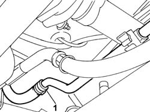

0010T70 POWER ASSISTED STEERING FLUID - REPLACE
- Path
- Procedures > 00 MAINTENANCE > 0010 NEW UNITS AND PLANNED MAINTENANCE > 0010T VEHICLE OIL AND FLUIDS > 0010T70 POWER ASSISTED STEERING FLUID - REPLACE
- Kind
- repair procedure (removal / refitting; the operation number is the code)
- Applies to
- all engines; all production periods
- Interactive page
- https://sloeber94.github.io/elrnDB-fDct/en/#/244000609
Applies to: all engines; all production periods
- Position the vehicle on the lift.
- Draw off the oil in the reservoir using a syringe and collect it in a suitable container.
Op. 7055B54 UNDER-ENGINE GUARD - R R
1. Disconnect the band from the pipe illustrated because it is the lowest point of the power assisted steering system.
- Position a suitable container under the pipe for collecting the fluid that comes out.
- Reconnect the pipe disconnected previously.

Applies to: all engines; all production periods
Op. 7055B54 UNDER-ENGINE GUARD - R R
- Lower the vehicle and refill the power assisted steering system using the appropriate fluid.
 | Description | Qty. | Component | Type | Classification |
|---|---|---|---|---|---|
. | TUTELA GI/A | 1.3 litri | POWER ASSISTED STEERING CIRCUIT | Oil | ATF DEXRON 2 D LEV SAE 10 W |
Topics linked from this page (1)
Topics that link to this page (7)
- 1004B10 POWER UNIT WITH MANUAL GEARBOX - R + R
- 1004B12 POWER UNIT WITH MANUAL GEARBOX - R+R FOR VERSIONS WITH A/C
- 1084B16 ENGINE OIL PUMP - R+R VEHICLES WITH A/C
- 4130B20 POWER STEERING PUMP R R
- 4130B34 SUPPLY PIPE FROM FLUID RESEVIOR TO POWER STEERING PUMP R R
- 4130B40 OUTLET PIPE FROM PUMP TO POWER STEERING CASE R R
- 4130B42 RETURN PIPE FROM POWER STEERING CASE TO POWER STEERING FLUID RESEVIOR R R